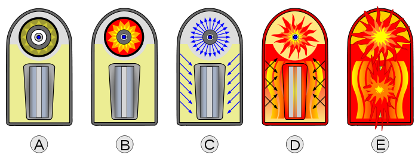

A thermonuclear weapon is a nuclear weapon design that uses the heat generated by a fission bomb to compress and ignite a nuclear fusion stage. This results in a greatly increased explosive power. It is colloquially referred to as a hydrogen bomb or H-bomb because it employs hydrogen fusion, though in most applications the majority of its destructive energy comes from uranium fission, not hydrogen fusion alone. The fusion stage in such weapons is required to efficiently cause the large quantities of fission characteristic of most thermonuclear weapons.
As thermonuclear weapons represent the most efficient design for weapon energy yield in weapons with yields above 50 kilotons, today virtually all the nuclear weapons deployed by the five nuclear-weapon states under the NPT are thermonuclear weapons using the Teller–Ulam design.[3]
Detailed knowledge of fission and fusion weapons is classified to some degree in virtually every industrialized nation. In the United States, such knowledge can by default be classified as Restricted Data, even if it is created by persons who are not government employees or associated with weapons programs, in a legal doctrine known as "born secret" (though the constitutional standing of the doctrine has been at times called into question, see United States v. The Progressive). Born secret is rarely invoked for cases of private speculation. The official policy of the United States Department of Energy has been not to acknowledge the leaking of design information, as such acknowledgment would potentially validate the information as accurate. In a small number of prior cases, the U.S. government has attempted to censor weapons information in the public press, with limited success.
Edward Teller
The concept of the thermonuclear weapon was first developed and used in 1952 and has since been used in most of the world's nuclear weapons.[2] The modern design of all thermonuclear weapons in the United States is known as the Teller-Ulam design for its two chief contributors, Edward Teller and Stanislaw Ulam, who developed it in 1951 for the U.S., with certain concepts developed with the contribution of John von Neumann. The first test of a hydrogen bomb prototype was the "Ivy Mike" nuclear test in 1952, conducted by the United States. The first ready-to-use thermonuclear bomb "RDS-6s" ("Joe 4") was tested on August 12, 1953, in the Soviet Union. Similar devices were developed by the United Kingdom, China, and France, though no specific code names are known for their designs.